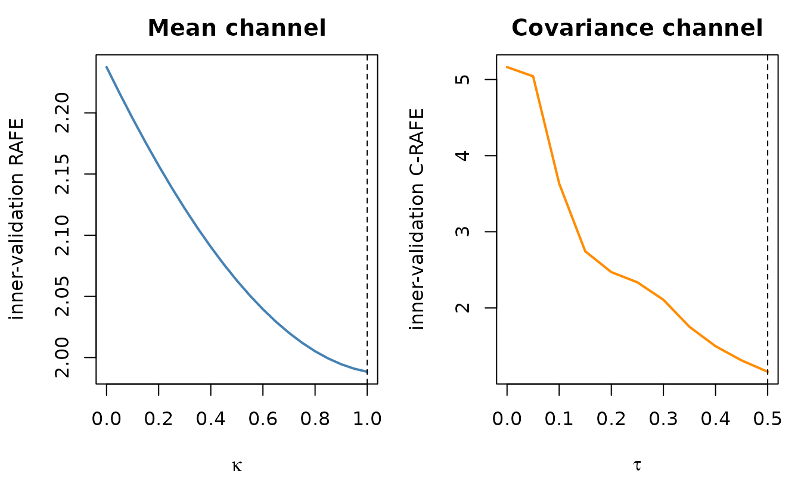
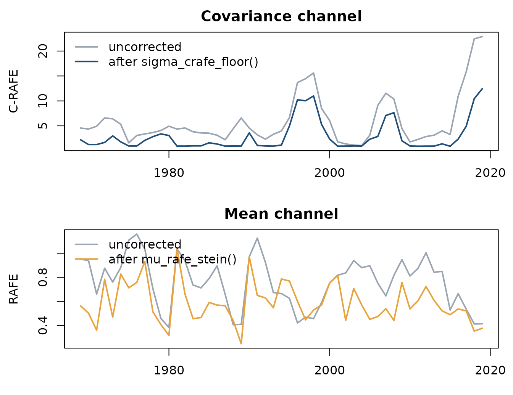
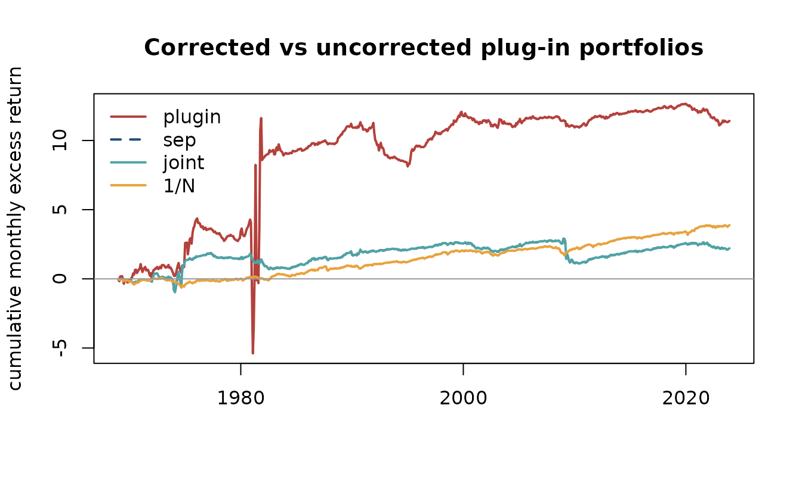

2. Post-processing forecasts: correcting the moments you were handed
Source:vignettes/rafe-post-processing.Rmd
rafe-post-processing.Rmdvignette("rafe-evaluation", package = "rafe") showed
that the Sharpe gap of a plug-in portfolio is bounded by two channels: a
mean error measured in the risk metric (RAFE) and a covariance
distortion measured in the operator norm (C-RAFE). This vignette does
something about them.
The premise is that you have already been handed — from a sample estimate, a vendor model, a machine-learning pipeline — and you cannot retrain it. What you can do is correct the moments before they reach the optimiser. That is the subject of the moment-correction working paper cited below.
The two atomic correctors
mu_rafe_stein() shrinks the mean toward a target with
intensity
,
computing that intensity in the
-whitened
space. Pass T_obs for the positive-part James-Stein
intensity implied by the sample size:
window <- R[1:60, ]
mu_hat <- colMeans(window)
Sigma_hat <- stats::cov(window)
mu_js <- mu_rafe_stein(mu_hat, Sigma_hat, T_obs = 60)
attr(mu_js, "kappa")
#> [1] 0.3704
round(rbind(raw = mu_hat, corrected = as.numeric(mu_js)), 4)[, 1:6]
#> NoDur Durbl Manuf Enrgy Chems BusEq
#> raw 0.0083 0.0042 0.0098 0.0078 0.0024 0.0124
#> corrected 0.0078 0.0053 0.0088 0.0075 0.0041 0.0104The corrector pulls the cross-section toward its own grand mean while leaving that grand mean untouched:
c(raw = mean(mu_hat), corrected = mean(mu_js),
raw_spread = sd(mu_hat), corrected_spread = sd(mu_js))
#> raw corrected raw_spread corrected_spread
#> 0.007029 0.007029 0.004908 0.003090sigma_crafe_floor() lifts the small eigenvalues of
to a floor set relative to the mean eigenvalue. Those small eigenvalues
are exactly the directions a mean-variance optimiser leverages hardest,
and exactly where the sample covariance is least trustworthy:
lam_raw <- eigen(Sigma_hat, symmetric = TRUE)$values
lam_cln <- eigen(sigma_crafe_floor(Sigma_hat, 0.3), symmetric = TRUE)$values
round(rbind(raw = lam_raw, floored = lam_cln), 5)
#> [,1] [,2] [,3] [,4] [,5] [,6] [,7] [,8] [,9]
#> raw 0.01264 0.00166 0.001 0.00071 6e-04 0.00039 0.00033 0.00027 0.00022
#> floored 0.01264 0.00166 0.001 0.00071 6e-04 0.00045 0.00045 0.00045 0.00045
#> [,10] [,11] [,12]
#> raw 0.00018 0.00009 0.00005
#> floored 0.00045 0.00045 0.00045
c(condition_raw = max(lam_raw) / min(lam_raw),
condition_floored = max(lam_cln) / min(lam_cln))
#> condition_raw condition_floored
#> 262.58 27.87Choosing and from data
Neither intensity should be picked by hand. Both tuners split the training window into an inner-training and an inner-validation block (40 + 20 months by default), fit on the first and score on the second.
They differ in what they score. sep_tune()
tunes each parameter against its own channel —
on inner-validation RAFE,
on inner-validation C-RAFE. joint_trafe_tune() searches the
full
grid against inner-validation T-RAFE.
kg <- seq(0, 1, by = 0.05)
tg <- seq(0, 0.5, by = 0.05)
fit_sep <- sep_tune(window, kappa_grid = kg, tau_grid = tg)
fit_joint <- joint_trafe_tune(window, kappa_grid = kg, tau_grid = tg)
rbind(sep = c(kappa = fit_sep$kappa, tau = fit_sep$tau_rel),
joint = c(kappa = fit_joint$kappa, tau = fit_joint$tau_rel))
#> kappa tau
#> sep 1 0.5
#> joint 1 0.5sep_tune() returns the two loss profiles, so you can see
whether the optimum is interior or sitting on a grid edge:
op <- par(mfrow = c(1, 2), mar = c(4.2, 4.2, 2.4, 1))
plot(kg, fit_sep$losses_kappa, type = "l", lwd = 2, col = "steelblue",
xlab = expression(kappa), ylab = "inner-validation RAFE",
main = "Mean channel")
abline(v = fit_sep$kappa, lty = 2)
plot(tg, fit_sep$losses_tau, type = "l", lwd = 2, col = "darkorange",
xlab = expression(tau), ylab = "inner-validation C-RAFE",
main = "Covariance channel")
abline(v = fit_sep$tau_rel, lty = 2)
par(op)Does correcting the moments shrink the bound?
This is the question the package can answer directly, and it is worth asking before any portfolio is formed. We roll a 60-month training window, tune on it, and measure both channels against the realised moments of the following 60 months.
T_train <- 60L
T_eval <- 60L
starts <- seq(1L, nrow(R) - T_train - T_eval + 1L, by = 12L)
channels <- do.call(rbind, lapply(starts, function(s) {
tr <- R[s:(s + T_train - 1L), ]
ev <- R[(s + T_train):(s + T_train + T_eval - 1L), ]
mu <- colMeans(ev); Sigma <- stats::cov(ev)
fit <- sep_tune(tr, kappa_grid = kg, tau_grid = tg)
data.frame(
rafe_raw = compute_rafe(colMeans(tr), mu, Sigma = Sigma),
rafe_cor = compute_rafe(fit$mu_tilde, mu, Sigma = Sigma),
crafe_raw = compute_crafe(Sigma, stats::cov(tr)),
crafe_cor = compute_crafe(Sigma, fit$Sigma_tilde),
date = ff12$date[s + T_train]
)
}))
round(rbind(
RAFE = c(raw = median(channels$rafe_raw), corrected = median(channels$rafe_cor),
share_improved = mean(channels$rafe_cor < channels$rafe_raw)),
`C-RAFE` = c(raw = median(channels$crafe_raw), corrected = median(channels$crafe_cor),
share_improved = mean(channels$crafe_cor < channels$crafe_raw))
), 3)
#> raw corrected share_improved
#> RAFE 0.790 0.564 0.824
#> C-RAFE 4.351 1.396 1.000Both channels fall. The covariance channel improves in every single window and its median drops by roughly a factor of three; the mean channel improves in about four windows out of five.
Not on average, but window by window:
op <- par(mfrow = c(2, 1), mar = c(3.2, 4.4, 2.2, 1))
matplot(channels$date, cbind(channels$crafe_raw, channels$crafe_cor),
type = "l", lty = 1, lwd = 2, col = c("#9AA5B1", "#1f4e79"),
xlab = "", ylab = "C-RAFE", main = "Covariance channel")
legend("topleft", c("uncorrected", "after sigma_crafe_floor()"), bty = "n",
lwd = 2, col = c("#9AA5B1", "#1f4e79"))
matplot(channels$date, cbind(channels$rafe_raw, channels$rafe_cor),
type = "l", lty = 1, lwd = 2, col = c("#9AA5B1", "#E8A33D"),
xlab = "", ylab = "RAFE", main = "Mean channel")
legend("topleft", c("uncorrected", "after mu_rafe_stein()"), bty = "n",
lwd = 2, col = c("#9AA5B1", "#E8A33D"))
par(op)The covariance line never crosses: the floor helps in all 51 windows, and by the largest margin exactly when the uncorrected distortion spikes. The mean channel is noisier, which is what you would expect of a shrinkage estimator — it trades a small loss in calm periods for a large gain in turbulent ones.
Taking it to portfolios
T_hold <- 12L
tan_w <- function(mu, S) { w <- drop(solve(S) %*% mu); w / sum(w) }
reb <- seq(1L, nrow(R) - T_train - T_hold + 1L, by = T_hold)
bt <- lapply(reb, function(s) {
tr <- R[s:(s + T_train - 1L), ]
ho <- R[(s + T_train):(s + T_train + T_hold - 1L), ]
sp <- sep_tune(tr, kappa_grid = kg, tau_grid = tg)
jt <- joint_trafe_tune(tr, kappa_grid = kg, tau_grid = tg)
ws <- list(
plugin = tan_w(colMeans(tr), stats::cov(tr)),
sep = tan_w(sp$mu_tilde, sp$Sigma_tilde),
joint = tan_w(jt$mu_tilde, jt$Sigma_tilde),
`1/N` = rep(1 / ncol(R), ncol(R))
)
list(r = vapply(ws, function(w) as.numeric(ho %*% w), numeric(T_hold)),
pars = c(k_sep = sp$kappa, t_sep = sp$tau_rel,
k_jnt = jt$kappa, t_jnt = jt$tau_rel))
})
rets <- do.call(rbind, lapply(bt, `[[`, "r"))
ann <- function(x) c(mean = mean(x) * 12, sd = stats::sd(x) * sqrt(12),
sharpe = mean(x) / stats::sd(x) * sqrt(12))
round(t(apply(rets, 2, ann)), 3)
#> mean sd sharpe
#> plugin 0.208 2.284 0.091
#> sep 0.040 0.356 0.113
#> joint 0.040 0.356 0.113
#> 1/N 0.071 0.155 0.456The uncorrected plug-in tangency portfolio is the disaster the literature leads you to expect: an annualised volatility above 200% and a Sharpe ratio near zero.
Correcting the moments cuts that volatility by about 85%, from roughly 2.28 to 0.36 annualised. The Sharpe ratio improves too, but far more modestly – from about 0.09 to 0.11 – because the correction shrinks the mean as well as the risk. Most of what the eigenvalue floor buys you here is the removal of enormous leveraged positions along badly-estimated directions, not extra return per unit of risk.
Plotted through time, the difference is not where you might expect it:
cum <- apply(rets, 2, cumsum)
dates_bt <- ff12$date[unlist(lapply(reb, function(s)
(s + T_train):(s + T_train + T_hold - 1L)))]
matplot(dates_bt, cum, type = "l", lwd = 2, lty = c(1, 2, 1, 1),
col = c("#B4413C", "#1f4e79", "#4FA3A5", "#E8A33D"),
xlab = "", ylab = "cumulative monthly excess return",
main = "Corrected vs uncorrected plug-in portfolios")
abline(h = 0, col = "grey60")
legend("topleft", colnames(rets), bty = "n", lwd = 2, lty = c(1, 2, 1, 1),
col = c("#B4413C", "#1f4e79", "#4FA3A5", "#E8A33D"))
sep is drawn dashed because it lies exactly on top of
joint.
Read that chart carefully, because the naive reading is wrong. The uncorrected plug-in portfolio ends highest. Almost all of it comes from a single episode in 1981-82, visible as the near-vertical excursion: the strategy first loses several times its capital and then makes it back.
rbind(`worst monthly return` = round(apply(rets, 2, min), 3),
`months below -100%` = colSums(rets < -1),
`cumulative sum` = round(cum[nrow(cum), ], 2))
#> plugin sep joint 1/N
#> worst monthly return -8.332 -1.164 -1.164 -0.225
#> months below -100% 4.000 1.000 1.000 0.000
#> cumulative sum 11.420 2.200 2.200 3.880A monthly return of is not a drawdown, it is ruin several times over: an investor holding that portfolio is wiped out and never reaches the recovery. The cumulative-sum convention above quietly assumes the position is refinanced at constant notional every month, which is what lets the red line come back at all. On a compounded basis the plug-in portfolio’s wealth goes negative and the path simply ends.
That is what the correction buys. It does not add return; it removes the leverage that makes the mean-variance solution uninvestable. The worst month falls from to , and the annualised volatility from 2.28 to 0.36.
And equal weighting still beats both, at about 0.46.
That is not a bug in the vignette, and it is worth stating plainly: on a
12-asset industry universe with unconstrained weights, 1/N
is a famously hard benchmark. The working paper’s claims rest on a
different and much more careful design – larger cross-sections,
non-overlapping inference, and comparison against Ledoit-Wolf and
nonlinear shrinkage rather than against a raw plug-in. Nothing here
reproduces them; see the paper.
The separability claim
The two tuners search different objectives, so there is no algebraic reason for them to agree. On this sample they do, in every rebalance:
pars <- do.call(rbind, lapply(bt, `[[`, "pars"))
c(kappa_agree = mean(pars[, "k_sep"] == pars[, "k_jnt"]),
tau_agree = mean(pars[, "t_sep"] == pars[, "t_jnt"]))
#> kappa_agree tau_agree
#> 1 1
round(rbind(kappa = summary(pars[, "k_sep"]), tau = summary(pars[, "t_sep"])), 3)
#> Min. 1st Qu. Median Mean 3rd Qu. Max.
#> kappa 0.0 0.525 0.8 0.706 1.0 1.0
#> tau 0.1 0.250 0.5 0.397 0.5 0.5That is the practical content of the separability claim: the bound’s
two channels can be tuned independently without loss, which turns a
two-dimensional grid search into two one-dimensional ones. If you are
tuning on a large cross-section, prefer sep_tune() — it is
the cheaper of the two and, here, selects identically.
One caveat on the grid. Relative floors are admitted on
[0, 0.5], which is the package default. On this universe
the selected
sits on the upper edge of that range in well over half the
rebalances:
c(tau_median = median(pars[, "t_sep"]),
share_at_upper_edge = mean(pars[, "t_sep"] == max(tg)))
#> tau_median share_at_upper_edge
#> 0.5000 0.5818A boundary-binding parameter means the data wants more flooring than the grid allows, so the reported optimum is a constrained one. Widening the grid here does improve realised Sharpe — but it leaves the range the paper works in, so the package will not do it silently.